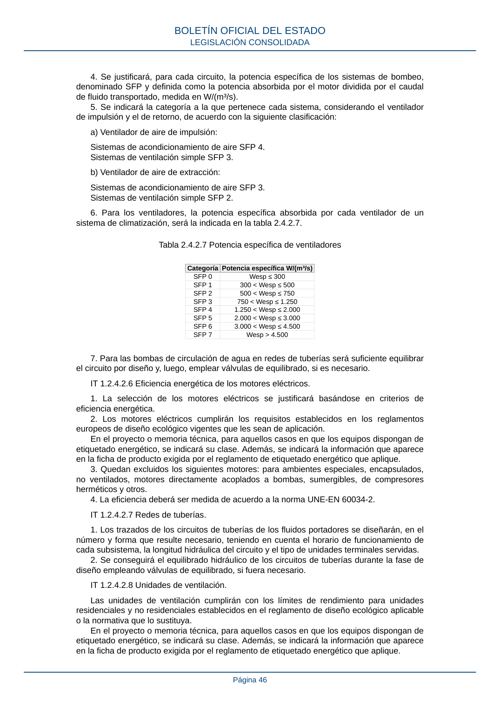

RITE · Página 46 · versión 2022-08-02
SHA256: ad1680c83bf4c7f5c656af1794c32ad0669ad9f36ac293737ff3f95177ff7b26 · página física 46 de 97 · métodos de encabezado
solo si están cotejados.
Formatos: Markdown · JSON de bloques · PDF p. 46 · imagen PNG
4. Se justificará, para cada circuito, la potencia específica de los sistemas de bombeo, denominado SFP y definida como la potencia absorbida por el motor dividida por el caudal de fluido transportado, medida en W/(m³/s). 5. Se indicará la categoría a la que pertenece cada sistema, considerando el ventilador de impulsión y el de retorno, de acuerdo con la siguiente clasificación: a) Ventilador de aire de impulsión: Sistemas de acondicionamiento de aire SFP 4. Sistemas de ventilación simple SFP 3. b) Ventilador de aire de extracción: Sistemas de acondicionamiento de aire SFP 3. Sistemas de ventilación simple SFP 2. 6. Para los ventiladores, la potencia específica absorbida por cada ventilador de un sistema de climatización, será la indicada en la tabla 2.4.2.7. Tabla 2.4.2.7 Potencia específica de ventiladores Categoría Potencia específica W/(m³/s) SFP 0 Wesp ≤ 300 SFP 1 300 < Wesp ≤ 500 SFP 2 500 < Wesp ≤ 750 SFP 3 750 < Wesp ≤ 1.250 SFP 4 1.250 < Wesp ≤ 2.000 SFP 5 2.000 < Wesp ≤ 3.000 SFP 6 3.000 < Wesp ≤ 4.500 SFP 7 Wesp > 4.500 7. Para las bombas de circulación de agua en redes de tuberías será suficiente equilibrar el circuito por diseño y, luego, emplear válvulas de equilibrado, si es necesario. IT 1.2.4.2.6 Eficiencia energética de los motores eléctricos. 1. La selección de los motores eléctricos se justificará basándose en criterios de eficiencia energética. 2. Los motores eléctricos cumplirán los requisitos establecidos en los reglamentos europeos de diseño ecológico vigentes que les sean de aplicación. En el proyecto o memoria técnica, para aquellos casos en que los equipos dispongan de etiquetado energético, se indicará su clase. Además, se indicará la información que aparece en la ficha de producto exigida por el reglamento de etiquetado energético que aplique. 3. Quedan excluidos los siguientes motores: para ambientes especiales, encapsulados, no ventilados, motores directamente acoplados a bombas, sumergibles, de compresores herméticos y otros. 4. La eficiencia deberá ser medida de acuerdo a la norma UNE-EN 60034-2. IT 1.2.4.2.7 Redes de tuberías. 1. Los trazados de los circuitos de tuberías de los fluidos portadores se diseñarán, en el número y forma que resulte necesario, teniendo en cuenta el horario de funcionamiento de cada subsistema, la longitud hidráulica del circuito y el tipo de unidades terminales servidas. 2. Se conseguirá el equilibrado hidráulico de los circuitos de tuberías durante la fase de diseño empleando válvulas de equilibrado, si fuera necesario. IT 1.2.4.2.8 Unidades de ventilación. Las unidades de ventilación cumplirán con los límites de rendimiento para unidades residenciales y no residenciales establecidos en el reglamento de diseño ecológico aplicable o la normativa que lo sustituya. En el proyecto o memoria técnica, para aquellos casos en que los equipos dispongan de etiquetado energético, se indicará su clase. Además, se indicará la información que aparece en la ficha de producto exigida por el reglamento de etiquetado energético que aplique. BOLETÍN OFICIAL DEL ESTADO LEGISLACIÓN CONSOLIDADA Página 46
